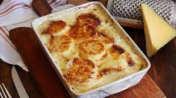

Papas a la Crema

Las papas a la crema se han hecho muy conocidas a lo largo del tiempo por un plato o acompa;amiento que es sencillo, rico y no deja muy satisfechos. Comencemos!
Ingredientes
- Papas(2)
- Media cucharada de manteca
- Media taza de crema de leche
- Sal y pimienta
- Ajo(1 diente)
- Meddia taza de leche
- Una cucharada de queso untable
- Media cucharada de manteca
Preparacion
- Lavar, pelar y cortar las papas en forma de discos.
- En una fuente para horno, untame una cucharada de manteca. Tras eso, pasamos el ajo por la superficie.
- Despues siguienndo un patron de "caracol", ponemos las papas en la fuente.
- En un recipiente aparte, un bowl o parecido, ponemos leche, crema de leche, queso crema, sal y pimienta. Batir hasta tener una consistencia uniforme.
- Llevamos la mezcla a la fuente y colocamos sobre las papas.
- Rallar queso de preferencia sobre la fuente
- Colocar en el horno por media hora
- Servir y comer!